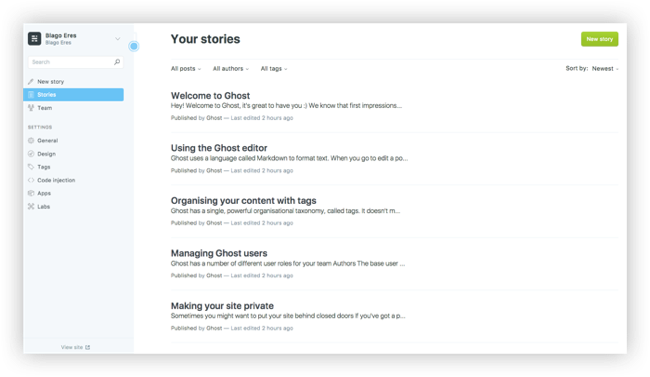

How to Install Ghost CMS with Docker Compose on Ubuntu 18.04
Updated by Linode Written by Linode
Ghost is an open source blogging platform that helps you easily create a professional-looking online blog.
Ghost’s 1.0.0 version was the first major, stable release of the Ghost content management system (CMS). Ghost includes a Markdown editor, refreshed user interface, new default theme design, and more. Ghost has been frequently updated since this major release, and the current version at time of publication is 1.25.5.
In this guide you’ll deploy Ghost using Docker Compose on Ubuntu 18.04. Ghost is powered by JavaScript and Node.js. Using Docker to deploy Ghost will encapsulate all of Ghost’s Node dependencies and keep the deployment self-contained. The Docker Compose services are also fast to set up and easy to update.
Before you Begin
Familiarize yourself with Linode’s Getting Started guide and complete the steps for deploying and setting up a Linode running Ubuntu 18.04, including setting the hostname and timezone.
This guide uses
sudowherever possible. Complete the sections of our Securing Your Server guide to create a standard user account, harden SSH access and remove unnecessary network services.Note
Replace each instance of example.com in this guide with your Ghost site’s domain name.Complete the Add DNS Records steps to register a domain name that will point to your Ghost Linode.
Ensure your system is up to date:
sudo apt update && sudo apt upgradeYour Ghost site will serve its content over HTTPS, so you will need to obtain an SSL/TLS certificate. Use Certbot to request and download a free certificate from Let’s Encrypt:
sudo apt install software-properties-common sudo add-apt-repository ppa:certbot/certbot sudo apt update sudo apt install certbot sudo certbot certonly --standalone -d example.comThese commands will download a certificate to
/etc/letsencrypt/live/example.com/on your Linode. Why not use Certbot's Docker container?
Why not use Certbot's Docker container?
When your certificate is periodically renewed, your web server needs to be reloaded in order to use the new certificate. This is usually accomplished by passing a web server reload command through Certbot’s
--deploy-hookoption.In your deployment, the web server will run in its own container, and the Certbot container would not be able to directly reload it. A workaround for this limitation would be needed to enable this architecture.
Install Docker and Docker Compose before proceeding. If you haven’t used Docker before, review the Introduction to Docker, When and Why to Use Docker, and How to Use Docker Compose guides for some context on how these technologies work.
Install Docker
These steps install Docker Community Edition (CE) using the official Ubuntu repositories. To install on another distribution, see the official installation page.
Remove any older installations of Docker that may be on your system:
sudo apt remove docker docker-engine docker.ioMake sure you have the necessary packages to allow the use of Docker’s repository:
sudo apt install apt-transport-https ca-certificates curl software-properties-commonAdd Docker’s GPG key:
curl -fsSL https://download.docker.com/linux/ubuntu/gpg | sudo apt-key add -Verify the fingerprint of the GPG key:
sudo apt-key fingerprint 0EBFCD88You should see output similar to the following:
pub 4096R/0EBFCD88 2017-02-22 Key fingerprint = 9DC8 5822 9FC7 DD38 854A E2D8 8D81 803C 0EBF CD88 uid Docker Release (CE deb)Add the
stableDocker repository:sudo add-apt-repository "deb [arch=amd64] https://download.docker.com/linux/ubuntu $(lsb_release -cs) stable"Update your package index and install Docker CE:
sudo apt update sudo apt install docker-ceAdd your limited Linux user account to the
dockergroup:sudo usermod -aG docker $USERNote
After entering theusermodcommand, you will need to close your SSH session and open a new one for this change to take effect.Check that the installation was successful by running the built-in “Hello World” program:
docker run hello-world
Install Docker Compose
Download the latest version of Docker Compose. Check the releases page and replace
1.21.2in the command below with the version tagged as Latest release:sudo curl -L https://github.com/docker/compose/releases/download/1.21.2/docker-compose-`uname -s`-`uname -m` -o /usr/local/bin/docker-composeSet file permissions:
sudo chmod +x /usr/local/bin/docker-compose
Install Ghost
The Ghost deployment has three components:
- The Ghost service itself;
- A database (MySQL) that will store your blog posts;
- A web server (NGINX) that will proxy requests on HTTP and HTTPS to your Ghost service.
These services are listed in a single Docker Compose file.
Create the Docker Compose file
Create and change to a directory to hold your new Docker Compose services:
mkdir ghost && cd ghostCreate a file named
docker-compose.ymland open it in your text editor. Paste in the contents from the following snippet. Replaceexample.comwith your domain, and insert a new database password whereyour_database_root_passwordappears. The values fordatabase__connection__passwordandMYSQL_ROOT_PASSWORDshould be the same:- docker-compose.yml
-
1 2 3 4 5 6 7 8 9 10 11 12 13 14 15 16 17 18 19 20 21 22 23 24 25 26 27 28 29 30 31 32 33 34 35 36 37 38 39version: '3' services: ghost: image: ghost:latest restart: always depends_on: - db environment: url: https://example.com database__client: mysql database__connection__host: db database__connection__user: root database__connection__password: your_database_root_password database__connection__database: ghost volumes: - /opt/ghost_content:/var/lib/ghost/content db: image: mysql:5.7 restart: always environment: MYSQL_ROOT_PASSWORD: your_database_root_password volumes: - /opt/ghost_mysql:/var/lib/mysql nginx: build: context: ./nginx dockerfile: Dockerfile restart: always depends_on: - ghost ports: - "80:80" - "443:443" volumes: - /etc/letsencrypt/:/etc/letsencrypt/ - /usr/share/nginx/html:/usr/share/nginx/html
The Docker Compose file creates a few Docker bind mounts:
/var/lib/ghost/contentand/var/lib/mysqlinside your containers are mapped to/opt/ghost_contentand/opt/ghost_mysqlon the Linode. These locations store your Ghost content.NGINX uses a bind mount for
/etc/letsencrypt/to access your Let’s Encrypt certificates.NGINX also uses a bind mount for
/usr/share/nginx/htmlso that it can access the Let’s Encrypt challenge files that are created when your certificate is renewed.
Create directories for those bind mounts (except for
/etc/letsencrypt/, which was already created when you first generated your certificate):sudo mkdir /opt/ghost_content sudo mkdir /opt/ghost_mysql sudo mkdir -p /usr/share/nginx/html
Create the NGINX Docker Image
The Docker Compose file relies on a customized NGINX image. This image will be packaged with the appropriate server block settings.
Create a new
nginxdirectory for this image:mkdir nginxCreate a file named
Dockerfilein thenginxdirectory and paste in the following contents:- nginx/Dockerfile
-
1 2 3FROM nginx:latest COPY default.conf /etc/nginx/conf.d
Create a file named
default.confin thenginxdirectory and paste in the following contents. Replace all instances ofexample.comwith your domain:- nginx/default.conf
-
1 2 3 4 5 6 7 8 9 10 11 12 13 14 15 16 17 18 19 20 21 22 23 24 25 26 27 28 29server { listen 80; listen [::]:80; server_name example.com; # Useful for Let's Encrypt location /.well-known/acme-challenge/ { root /usr/share/nginx/html; allow all; } location / { return 301 https://$host$request_uri; } } server { listen 443 ssl http2; listen [::]:443 ssl http2; server_name example.com; ssl_protocols TLSv1.2; ssl_ciphers HIGH:!MEDIUM:!LOW:!aNULL:!NULL:!SHA; ssl_prefer_server_ciphers on; ssl_session_cache shared:SSL:10m; ssl_certificate /etc/letsencrypt/live/example.com/fullchain.pem; ssl_certificate_key /etc/letsencrypt/live/example.com/privkey.pem; location / { proxy_set_header Host $host; proxy_set_header X-Real-IP $remote_addr; proxy_set_header X-Forwarded-Proto https; proxy_pass http://ghost:2368; } }
This configuration will redirect all requests on HTTP to HTTPS (except for Let’s Encrypt challenge requests), and all requests on HTTPS will be proxied to the Ghost service.
Run and Test Your Site
From the ghost directory start the Ghost CMS by running all services defined in the docker-compose.yml file:
docker-compose up -d
Verify that your blog appears by loading your domain in a web browser. It may take a few minutes for Docker to start your services, so try refreshing if the page does not appear when you first load it.
If your site doesn’t appear in your browser, review the logs generated by Docker for more information. To see these errors:
Shut down your containers:
cd ghost docker-compose downRun Docker Compose in an attached state so that you can view the logs generated by each container:
docker-compose upTo shut down your services and return the command prompt again, press
CTRL-C.
Complete the Setup
To complete the setup process, navigate to the Ghost configuration page by appending /ghost to the end of your blog’s URL or IP. This example uses https://example.com/ghost.
On the welcome screen, click Create your account:
Enter your email, create a user and password, and enter a blog title:
Invite additional members to your team. If you’d prefer to skip this step, click I’ll do this later, take me to my blog! at the bottom of the page:
Navigate to the Ghost admin area to create your first post, change your site’s theme, or configure additional settings:

Usage and Maintenance
Because the option restart: always was assigned to your services in your docker-compose.yml file, you do not need to manually start your containers if you reboot your Linode. This option tells Docker Compose to automatically start your services when the server boots.
Update Ghost
Your docker-compose.yml specifies the latest version of the Ghost image, so it’s easy to update your Ghost version:
docker-compose down
docker-compose pull && docker-compose up -d
Renew your Let’s Encrypt Certificate
Open your Crontab in your editor:
sudo crontab -eAdd a line which will automatically invoke Certbot at 11PM every day. Replace
example.comwith your domain:0 23 * * * certbot certonly -n --webroot -w /usr/share/nginx/html -d example.com --deploy-hook='docker exec ghost_nginx_1 nginx -s reload'Certbot will only renew your certificate if its expiration date is within 30 days. Running this every night ensures that if something goes wrong at first, the script will have a number of chances to try again before the expiration.
You can test your new job with the
--dry-runoption:sudo bash -c "certbot certonly -n --webroot -w /usr/share/nginx/html -d example.com --deploy-hook='docker exec ghost_nginx_1 nginx -s reload'"
More Information
You may wish to consult the following resources for additional information on this topic. While these are provided in the hope that they will be useful, please note that we cannot vouch for the accuracy or timeliness of externally hosted materials.
Join our Community
Find answers, ask questions, and help others.
This guide is published under a CC BY-ND 4.0 license.